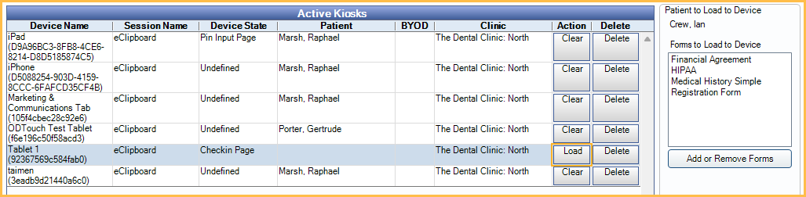

eClipboard: Workflow
Manually or automatically load forms to the eClipboard device to act as a kiosk.
One-Time Setup
The following must be set up prior to using eClipboard.
- Sign up for the eClipboard service. See eServices Signup.
- Determine eClipboard settings. See eClipboard Setup.
- Enable consent forms to show in Patient Forms. See Patient Forms.
- Enable mobile layout for any sheets you want to use in eClipboard. See Edit Mobile Sheet Def.
- Ensure the patient has an appointment scheduled for today.
Manually Send Forms to eClipboard
To manually send forms to eClipboard (such as consent forms) do the following:
- In Open Dental, select the patient to load forms for.
- In the Kiosk Manager, highlight the device, then click Add or Remove Forms.

- In the Patient Forms window, click Add.

- Select the forms to send to eClipboard, then click To Kiosk.

- The selected forms show in the Patient Forms window. The kiosk column fills with their order. Click Close to return to the Kiosk Manager.

- In the Kiosk Manager, the forms lists on the right. Click Load to send them to the selected device. The forms open in the eClipboard app.

Automatically Send Forms to eClipboard
If using the eClipboard App to allow patient check-in, forms can be automatically loaded. These forms are determined in eClipboard Setup.
On the eClipboard App, the patient logs in using their first name, last name, and birthdate. Once they confirm their appointment time, the forms automatically populate.
Importing Form Information
When a patient has completed a form, details can be imported into Open Dental. See Import Patient Forms and Medical Histories for details.
It is important to manually review information before importing to ensure information is accurate and spelled correctly.